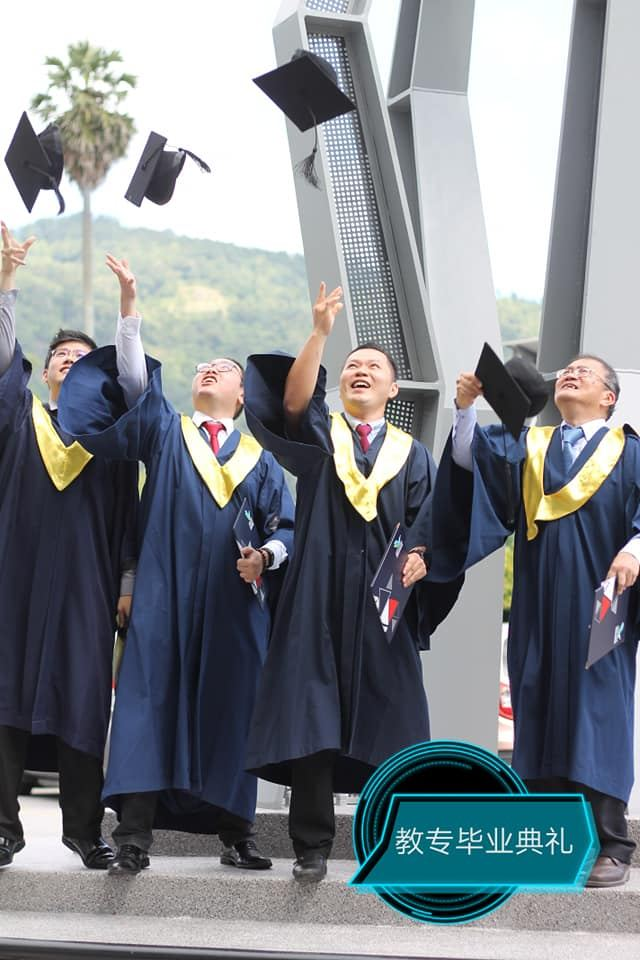
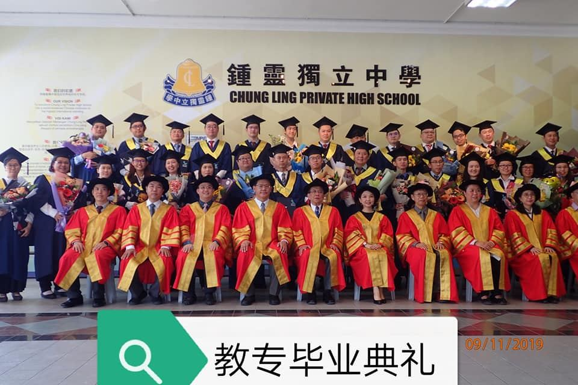

经过两年的努力，本校的五名老师在学校的支持下完成了由新纪元学院教育系承办，英国西
经过两年的努力，本校的五名老师在学校的支持下完成了由新纪元学院教育系承办，英国西苏格兰学院发证的教育专业文凭课程（钟灵班）。他们分别是为校服务多年的郑国强老师和汪朝文老师，近期委任为本校代校长的李才龙校长，指导高三考试班多年的黄迪凯老师和新人黄冠茗老师。其中名列前茅的李才龙校长还获得了优秀成绩“书卷奖”.
为了贯彻本校的办学理念，提升老师的教学水平成为了本校的发展重点。而全校老师都拥有教育专业相关文凭也成了本校的终极目标，五位老师的毕业让我们更近了一步。
最后，祝福还在育才班上课的三名老师，以及正在进修教育硕士的四名老师学业顺利，期待你们毕业的消息，为南华的学生提供更优秀的教育。

